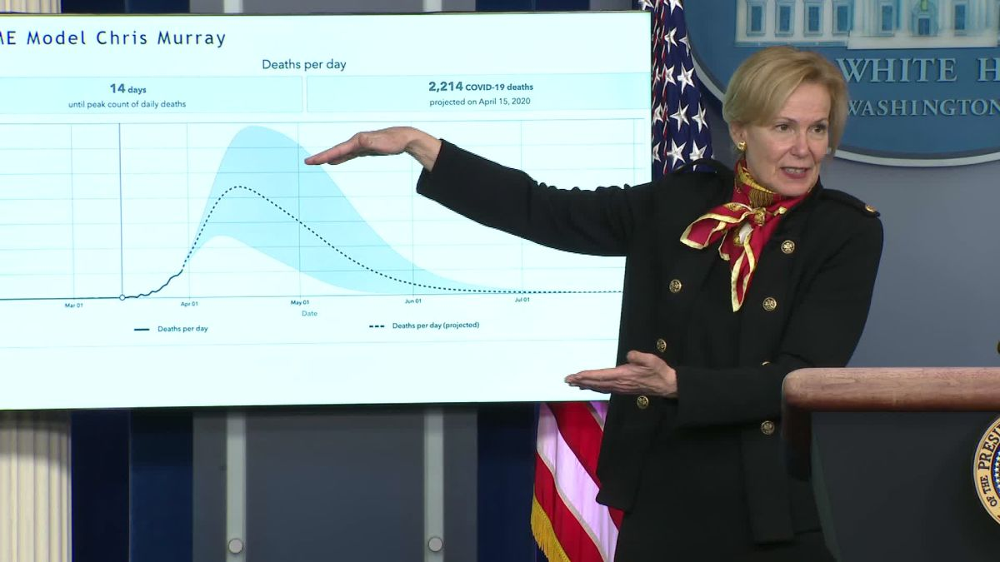
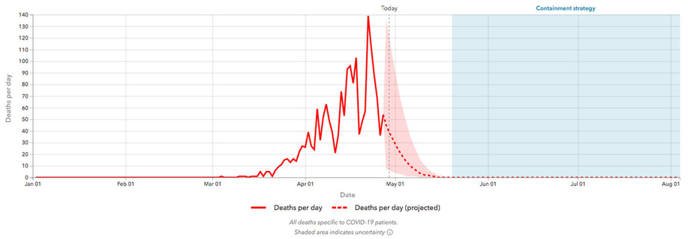
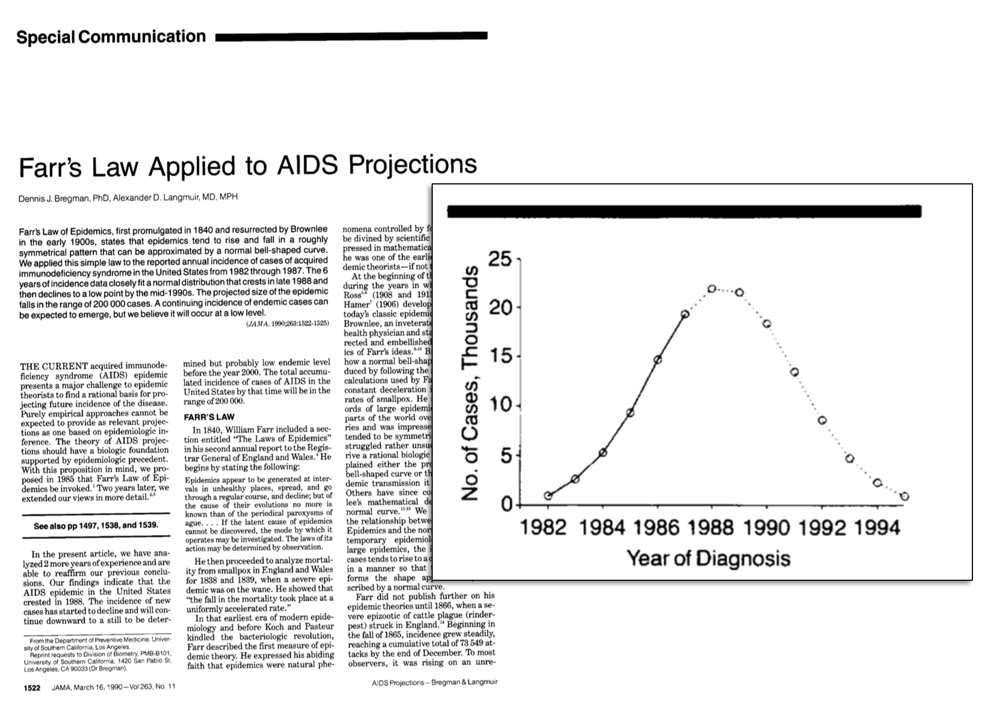
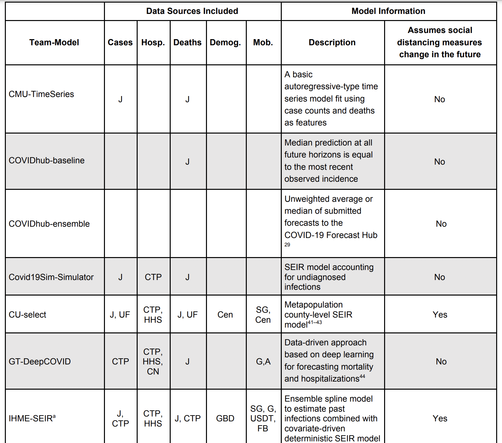
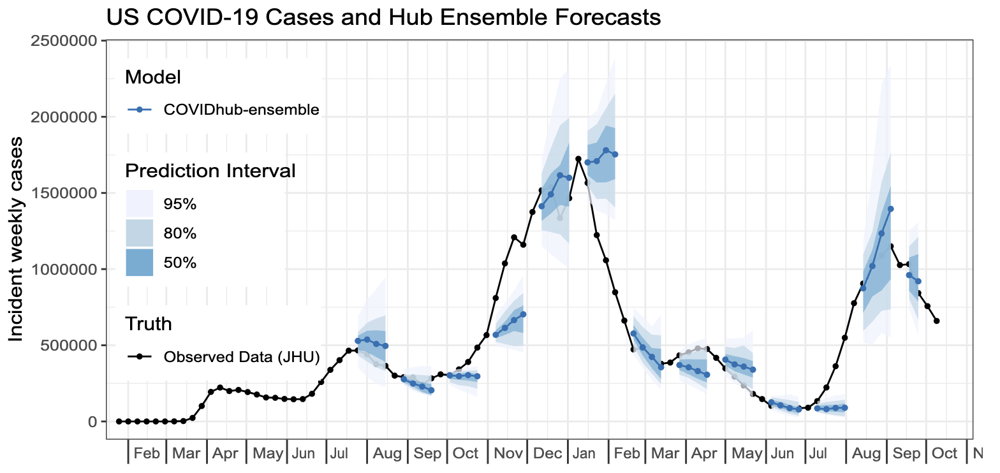
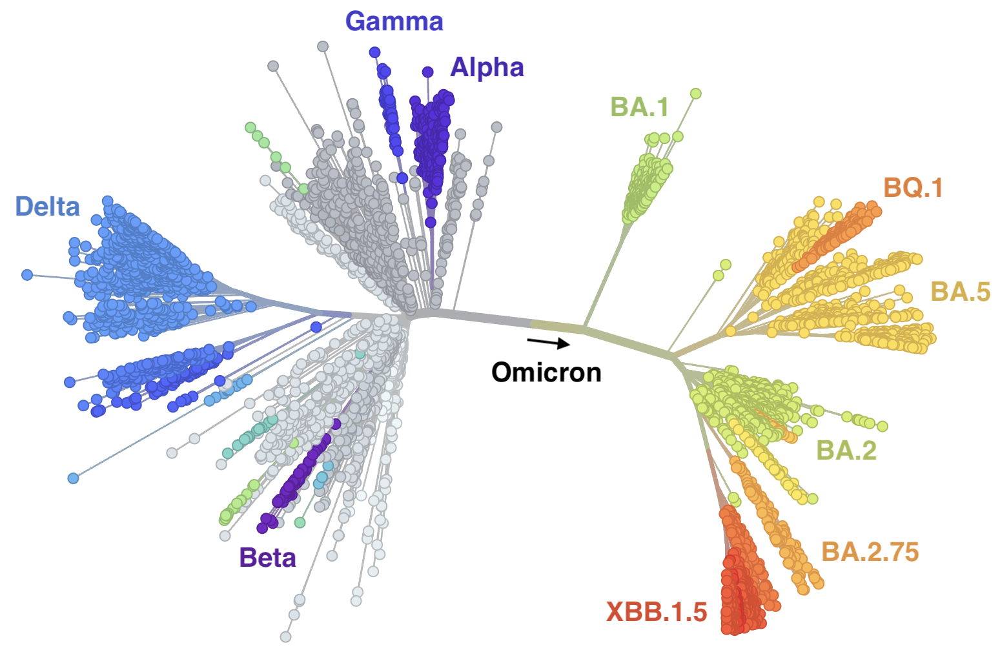
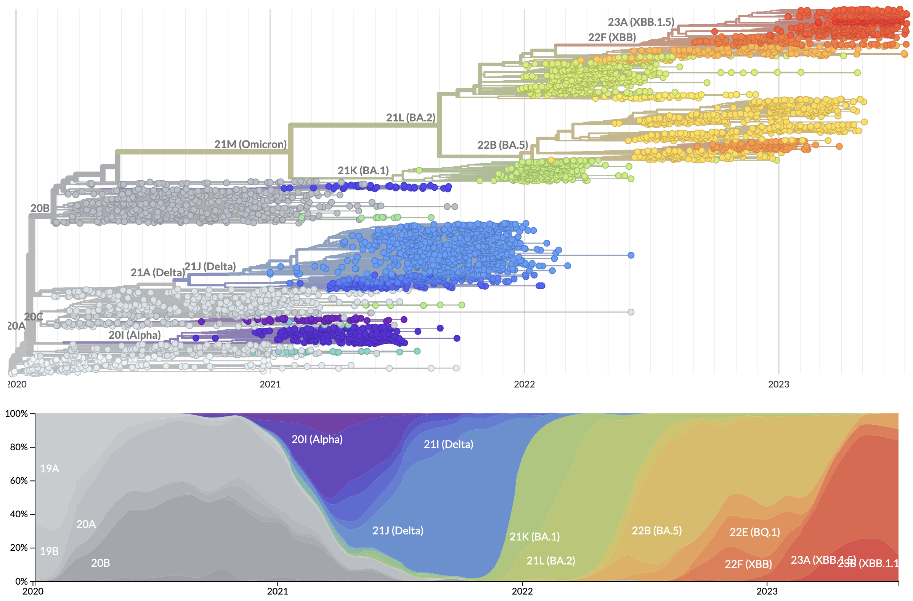
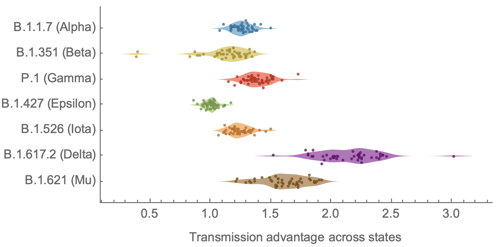
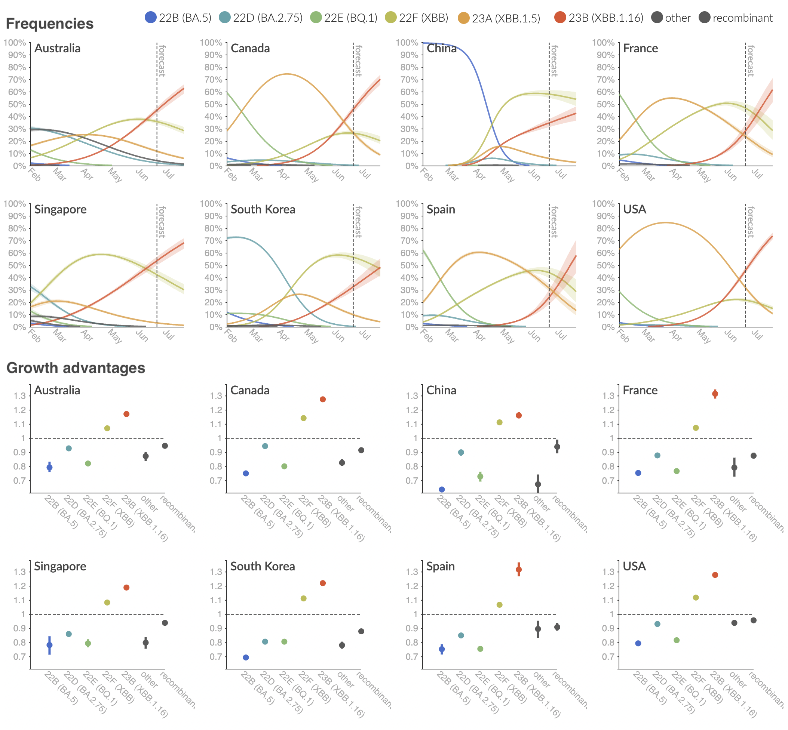

Forecasting
Forecasting is a big problem

Rapid progress
Actual v. predicted distances of Atlantic cyclones

General, overlapping approaches
Machine learning
Statistical models
Nonlinear forecasting
"Mechanistic" modeling
DREAM challenges
Inference of gene regulatory networks
from knockout, observational, and synthetic data

Compete Lasso, random forests, Bayesian networks, mutual information, ANOVA, etc.
Ecological niche modeling

An artificial neural network that included microbial interactions performed best.
Nonlinear forecasting
Reconstruct attractor ("library") from time series
Use attractor to make short-term predictions
Forecasting communities

Dynamics may be chaotic

Predictions with chaos: short shelf life
Trajectories in chaotic attractors diverge
$$ \lvert \delta \textbf{Z}(t)\rvert \approx e^{\lambda t}\lvert\delta\textbf{Z}_0\rvert$$
$\lambda$ is the Lyapunov exponent
(so with chaos, $\lambda>0$)
How to forecast
- Choose an embedding dimension $E$ and lag $\tau$
- Each point in $E$-dimensional space: $\{x_t,x_{t-\tau},x_{t-2\tau},...,x_{t-(E-1)\tau}\}$
- Construct these points from the time series
- Define a point to predict ("predictee")
- See where predictee's $E+1$ nearest neighbors wind up $t$ steps into the future
- Measure correlations $\rho$ between predictee's observed future state and neighbors' weighted predictions
Choosing $E$ and $\tau$
An unsolved problem
Use $E$ (and $\tau$) that yield best predictions

Observational noise v. chaos

Predicting flu

Epidemic sizes negatively correlated

Predict based on cumulative incidence

where $I(s)$ is the incidence in week $s$, $h$ is a strain-specific incidence threshold, $T$ is the time of crossing $h$, and $Y$ is the strain's whole-season cumulative incidence proxy.
Predictions v. observations (H3N2)

Predicting flu in Hong King
Aim: Predict peak timing and magnitude

Mechanistic model and particle filter

Achieves 37% accuracy with 1-3 week lead, ~50% at 0 week lead
Epidemic Prediction Initiative
Forecasting SARS-CoV-2
Unusual error
A statistical model

Some precedent: Farr's Law
(U.S.) COVID-19 Forecast Hub
Comparing models
Evaluating performance
Failure to predict change
Evolutionary forecasting
Influenza vaccine strain selection strategy
General strategy for antigenically evolving seasonal influenza viruses is attempt to match vaccine strain as close as possible to circulating viruses

Vaccine strain selection timeline
Due to manufacturing and distribution, vaccine strain selection occurs in Feb for an fall vaccination campaign ahead of seasonal influenza epidemic

Fitness models project strain frequencies
Future frequency $x_i(t+\Delta t)$ of strain $i$ derives from strain fitness $f_i$ and present day frequency $x_i(t)$, such that
$$x_i(t+\Delta t) = \frac{1}{Z(t)} \, x_i(t) \, \mathrm{exp}(f_i \, \Delta t)$$
Strain frequencies at each timepoint are normalized by total frequency $Z(t)$. This captures clonal interference between competing lineages.

Match strain forecast to retrospective circulation

Strain fitness estimated from viral attributes
The fitness $f$ of strain $i$ is estimated as
$$f_i = \beta^\mathrm{A} \, f_i^\mathrm{A} + \beta^\mathrm{B} \, f_i^\mathrm{B} + \ldots$$
where $f^A$, $f^B$, etc... are different standardized viral attributes and $\beta^A$, $\beta^B$, etc... coefficients are trained based on historical evolution
| Antigenic drift | Intrinsic fitness | Recent growth |
|---|---|---|
| epitope mutations | non-epitope mutations | local branching index |
| HI titers | DMS data (via Bloom lab) | delta frequency |
Model successfully predicts clade growth and best pick from model is generally close to best possible retrospective pick

Main issue
Strain fitness $f_i$ is largely fixed by the "fundamentals" of the strain rather than being learned from frequency behavior.
Genetic relationships of globally sampled SARS-CoV-2 to present
Rapid displacement of existing diversity by emerging variants
Population genetic expectation of variant frequency under selection
$x' = \frac{x \, (1+s)}{x \, (1+s) + (1-x)}$ for frequency $x$ in one generation with selective advantage $s$
$x(t) = \frac{x_0 \, (1+s)^t}{x_0 \, (1+s)^t + (1-x_0)}$ for initial frequency $x_0$ over $t$ generations
Trajectories are linear once logit transformed via $\mathrm{log}(\frac{x}{1 - x})$

Variants show consistent frequency dynamics in logit space

Multinomial logistic regression
Multinomial logistic regression models the probability of a virus sampled at time $t$ belonging to variant $i$ as
$$\mathrm{Pr}(X = i) = x_i(t) = \frac{p_i \, \mathrm{exp}(f_i \, t)}{\sum_{1 \le j \le n} p_j \, \mathrm{exp}(f_j \, t) }$$
where the model has $2n$ parameters consisting of $p_i$ the frequency of variant $i$ at initial timepoint and $f_i$ the growth rate or fitness of variant $i$ for $n$ variants.
The model is fit to minimize "log loss" of predicted variant vs observed variant across observations in dataset.
Multinomial logistic regression fits variant frequencies well

Original VOC viruses had substantially increased transmissibility
Clade and lineage forecasts continuously updated
Multinomial logistic regression should work well for SARS-CoV-2 prediction, except new variants have been emerging fast enough that the prediction horizon is really quite short